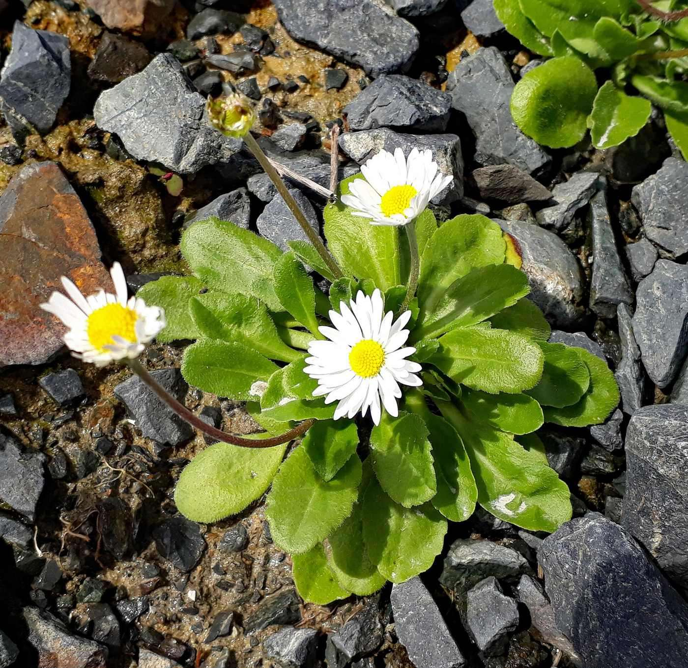

制作側の連想
香水瓶の部位を、配置図にしてみる
香水瓶(アトマイザー)の部位を図にしたもので、制作側の連想です。お店の理念・由来とは無関係で、実際の製品の仕様を示すものでもありません。 六つの部位に番号をふり、上の図と並べています。
凡例
六つの部位
- 1キャップいちばん上にかぶせるふたで、ノズルを守る部分。
- 2ポンプヘッド指で押し下げる頭の部分で、押すと中身が出る。
- 3ノズルポンプヘッドの先にある小さな噴霧口で、霧が出ていく穴。
- 4口金(カラー)ボトルの口に固定する金具で、ポンプを支える輪。
- 5ボトル中身を入れるガラスの本体で、いちばん大きな部位。
- 6ディップチューブボトルの底近くまで伸びる細い管で、中身を吸い上げる通り道。
写真(イメージ)
写真(イメージ)



写真はイメージです。お店のものではありません。
ご案内
お店のこと(確認できたものだけ)
| 所在地 | 〒509-0141 岐阜県各務原市鵜沼各務原町５丁目１５２ 番1 |
|---|---|
| 電話 | 準備中 |
| 営業時間 | 準備中 |
| 定休日 | 準備中 |
| ご予約 | 準備中 |
| 駐車場 | 準備中 |
| SNS | Instagram @mitsuboshi_coffee |